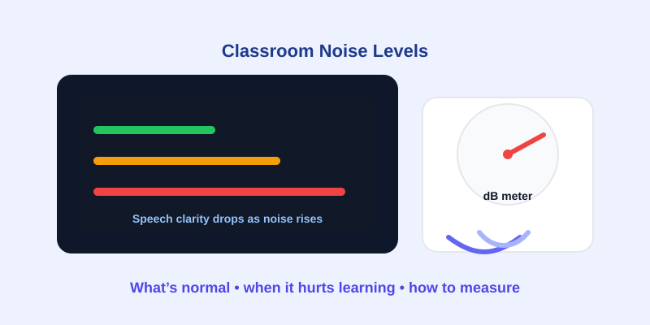

Classroom Noise Levels: What’s Normal and When It Hurts Learning
Updated Mar 10, 2026 • 8 min read
Classroom noise isn’t only a “comfort” issue. It affects attention, memory, speech understanding, and teacher fatigue. The most helpful question is not “What’s the exact dB?” but whether the noise level makes it harder for students to understand speech and stay focused.
The Two Numbers That Matter (A Simple Framework)
- 60-second average dB during typical instruction and group work.
- Baseline vs activity delta (quiet work vs discussion). The delta reveals which routines cause the biggest spikes.
The delta is an underrated metric. Even if your absolute readings vary by device, a consistent method still highlights when the classroom crosses from “lively” into “chaotic.”
Typical Classroom Noise Ranges (Practical Reference)
- Quiet reading: ~35–50 dB
- Teacher-led instruction: ~50–65 dB
- Group work: ~65–75 dB
- Transitions / cafeteria / gym: often 75–90+ dB
If you frequently see levels in the range where people need to raise their voice, speech intelligibility drops—especially for young students, non-native speakers, and students with hearing differences.
A 5-Minute Measurement Routine for Teachers
- Pick three time slots: arrival/transition, instruction, group work.
- Measure from the same spot (student area, not the loudest corner).
- Record 60-second averages and a short note about the activity.
- Repeat once on another day to confirm patterns.
Tip: if you need to make a facilities request (HVAC, doors, hallway leakage), logs with timestamps and consistent measurement position are far more persuasive than a single screenshot.
Noise Reduction That Actually Works (Low Budget)
Quick wins
- Use a simple “voice level chart” and rehearse it like a routine.
- Stagger transitions by 30 seconds to reduce peak noise.
- Teach a silent attention signal and practice it early.
Cheap wins
- Felt pads on chair and desk legs (often the biggest improvement).
- Door sweeps and simple seals to reduce hallway leakage.
- Soft boards and fabric surfaces to reduce reflections.
Teacher Health: Treat “Loud Every Day” as Exposure
Teachers often compensate by speaking louder, which creates vocal strain and fatigue and can escalate classroom volume further. If your room regularly approaches high levels for long periods, treat it as an occupational exposure problem and consider practical controls (distance, breaks, quieter routines) and hearing protection in unusually loud environments.
If you need a structured approach for logs and documentation, this guide is also useful in school settings: How to Collect Valid Evidence with a Sound Meter.